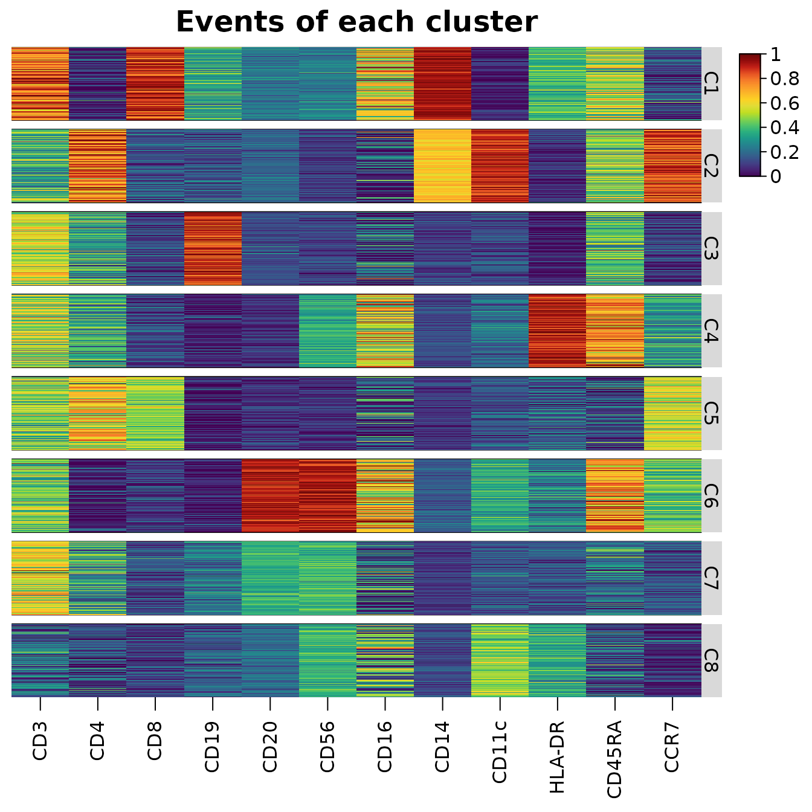
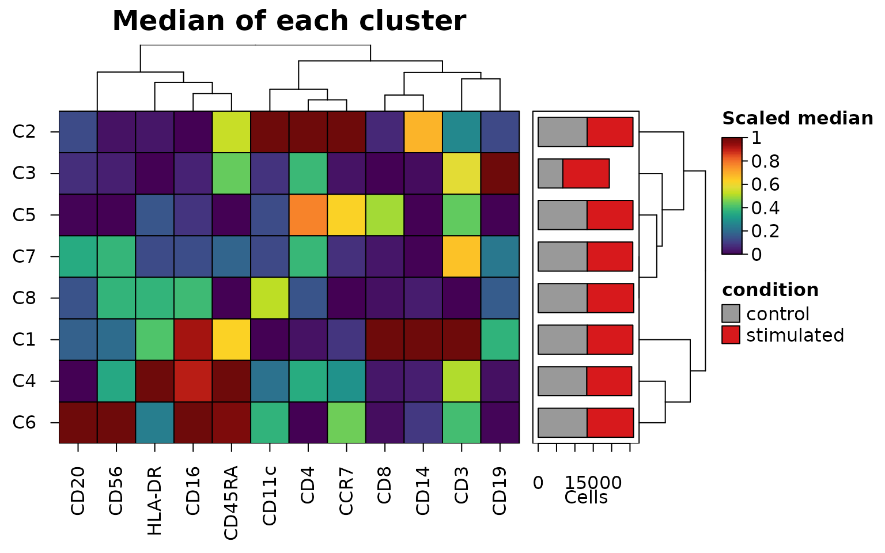
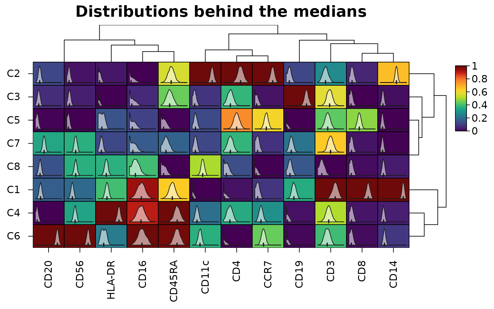
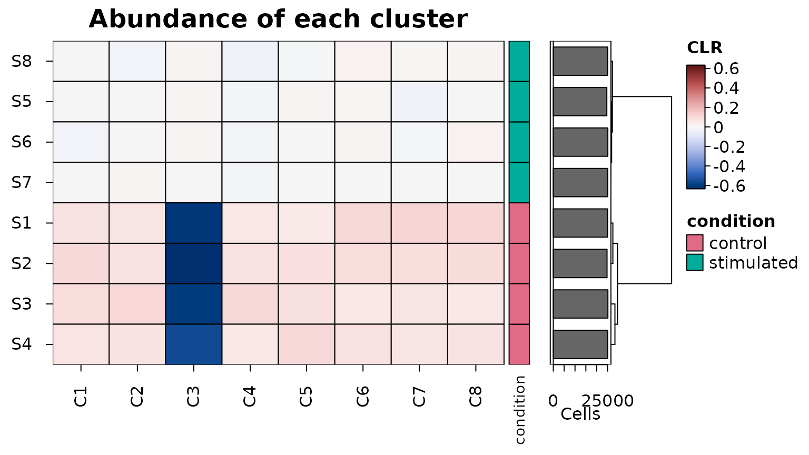
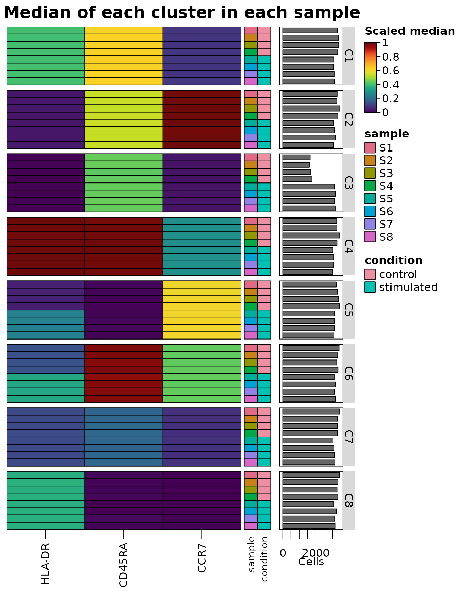
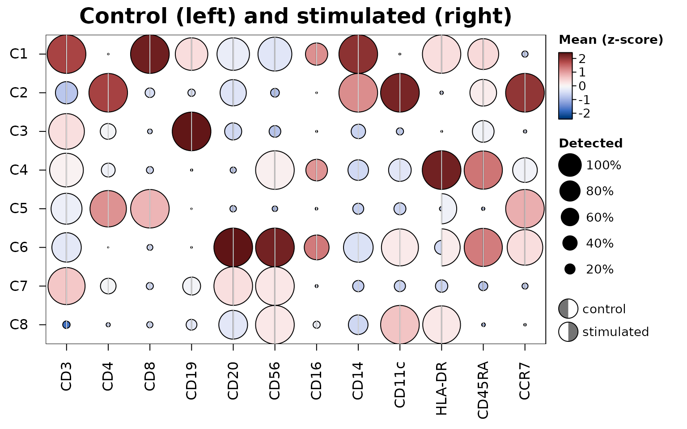
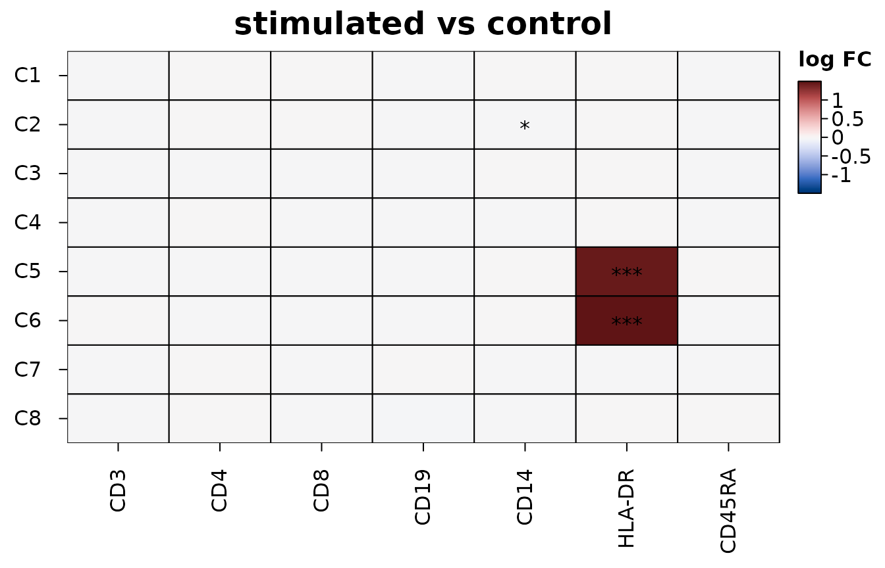
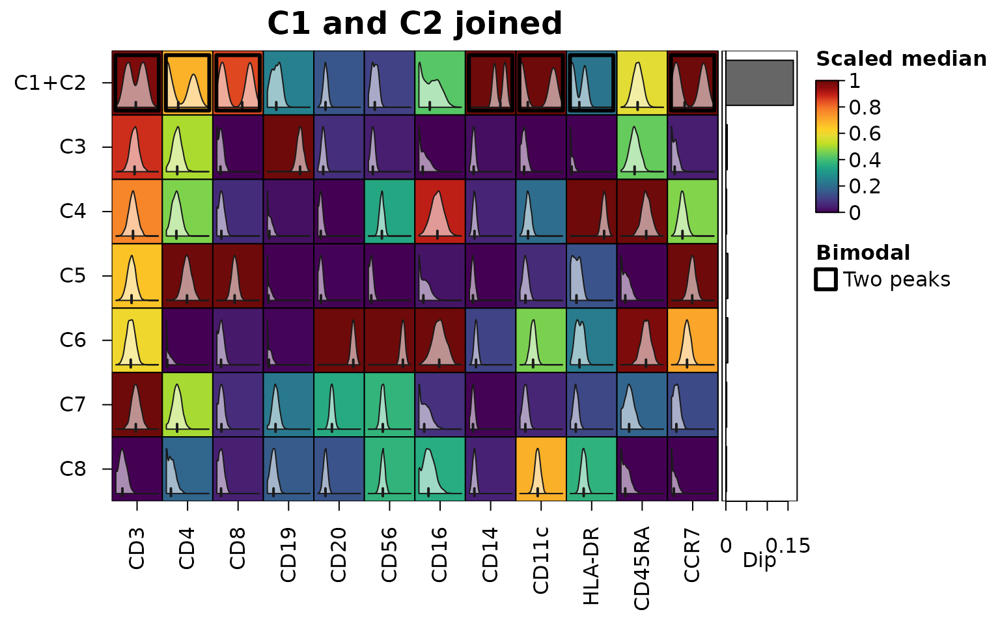

Cytometry data arrive with events as rows and markers as columns, as HeatmapR draws cells. A clustered experiment has many events but few markers and clusters, so most of its figures are heatmaps of summaries: the median of each marker in each cluster, the abundance of each cluster in each sample, and the median of each cluster in each sample. This guide draws them all, from the events.
Reading cytometry data
A matrix or data frame of events works as it is, with
group_by and annotation_by naming its columns
(which are then left out of the features). flowFrame and
flowSet objects are read directly, without flowCore.
Markers are named by their description (e.g. "CD3") or
channel ("FL1-A"), and a flowSet’s samples
("sample") and phenotype data (pData()) are
metadata:
heat_map_summarise(fs, features = c("CD3", "CD4", "CD8"), group_by = "cluster",
fun = "median", transform = "asinh", cofactor = 150)
heat_map(fs, features = c("CD3", "CD4", "CD8"), group_by = "cluster",
group_max = 500, annotation_by = "sample", transform = "asinh",
cofactor = 150)The means, sums, counts and proportions detected of dense events, and the medians of groups of them, are found in compiled code without copying the data.
Example data
heat_map_example("cytometry") simulates 200,000 events
with 12 markers in eight clusters, from eight samples in two conditions,
as raw intensities. Cluster C3 is twice as common in the stimulated
samples, and HLA-DR rises in clusters C5 and C6 under stimulation.
library(HeatmapR)
events <- heat_map_example("cytometry")
markers <- names(events)[1:12]
markers
#> [1] "CD3" "CD4" "CD8" "CD19" "CD20" "CD56" "CD16" "CD14"
#> [9] "CD11c" "HLA-DR" "CD45RA" "CCR7"
head(events, 3)
#> CD3 CD4 CD8 CD19 CD20 CD56 CD16
#> 1 65.84633 15.045075 0.0000 1697.35557 5.337933 2.091297 2.605279
#> 2 73.17048 4.164727 5341.6891 31.48333 10.311145 9.672986 6.615528
#> 3 26.56714 23.425620 153.8425 2.63540 7.046278 3.984819 9.395612
#> CD14 CD11c HLA-DR CD45RA CCR7 cluster sample condition
#> 1 11.41652 6.415408 5.551045 8.483152 2.123304 C3 S5 stimulated
#> 2 342075.87342 3.008363 53.019700 22.408138 7.718382 C1 S7 stimulated
#> 3 13.19786 2.474503 15.259158 2.179273 36.431362 C5 S6 stimulatedThe asinh transform and quantile scaling
Raw intensities span orders of magnitude and include negative values
after compensation, so they are transformed before they are drawn. Mass
cytometry intensities are usually transformed with asinh(x / 5) (Bendall
et al. 2011), and flow cytometry intensities with a cofactor of about
150. transform = "asinh" with cofactor (one
number, or one per marker, named by marker) transforms the events in
heat_map(), heat_map_summarise(),
heat_map_dot() and heat_map_contrast().
Each marker is then usually scaled from 0 to 1 between its 1st and
99th percentiles, so that a few bright events don’t compress the colours
of all the others. scale = "quantile" with q
(0.01 by default) does that. Values beyond the quantiles are clipped to
0 and 1.
Heatmaps of events
A heatmap of events, at most 250 of each cluster, transformed and scaled within each marker:
heat_map(events, features = markers, group_by = "cluster", group_max = 250,
transform = "asinh", scale = "quantile", axis_text_y = NA,
title = "Events of each cluster")
Without group_max, every event is drawn: heatmaps of
more than 50,000 cells are drawn as raster images, so all 200,000 events
take about a second. The large heatmaps
guide clusters 100,000 rows, splits them by k-means and labels a few
of them.
Cluster medians and abundances
heat_map_summarise() reduces each cluster to the median
of each marker, transformed and scaled on the way.
transform = "asinh" transforms the events before their
medians are taken. scale = "quantile" scales the medians of
the clusters (scale_when = "last", the default), or the
events before summarising them ("first").
Here stack_by also counts the events of each condition
in each cluster. The summary keeps the number of events in each cluster
and in each part of it (its "n" and "stack"
attributes). bar_values_y = "n" draws them as bars beside
the clusters, stacked by condition with
bar_type_y = "stack"; "fill" draws the
proportions instead:
medians <- heat_map_summarise(
events,
features = markers,
group_by = "cluster",
fun = "median",
transform = "asinh",
cofactor = 5,
scale = "quantile",
q = 0.01,
stack_by = "condition"
)
attr(medians, "stack")
#> control stimulated
#> C1 13367 12417
#> C2 13325 12482
#> C3 6719 12651
#> C4 13240 12229
#> C5 13313 12500
#> C6 13318 12655
#> C7 13369 12388
#> C8 13369 12658
#> attr(,"title")
#> [1] "condition"
heat_map(
medians,
tree = "both",
bar_values_y = "n",
bar_type_y = "stack",
bar_size_y = 1.6,
bar_fill_y = c(control = "grey60", stimulated = "#D7191C"),
legend_title = "Scaled median",
title = "Median of each cluster"
)
Distributions behind the medians
A median hides the shape of the values behind it.
heat_map_summarise(fun = "values") keeps the values of each
cluster, and cell_values draws their distribution inside
each cell, here from 2,000 events of each cluster:
sub <- events[heat_map_downsample(events$cluster, 2000), ]
heat_map(
heat_map_summarise(sub, features = markers, group_by = "cluster",
fun = "median", transform = "asinh"),
scale = "column",
cell_values = heat_map_summarise(sub, features = markers, group_by = "cluster",
fun = "values", transform = "asinh"),
tree = "both",
title = "Distributions behind the medians"
)
cell_glyph draws a histogram or box plot instead of a
density, and cell_glyph_range shares the range of each
column, row or all cells.
Differential abundance
heat_map_composition() counts the events of each cluster
in each sample and draws the share of each sample’s events in each
cluster, with the samples clustered and annotated by their condition.
Shares add up to one, so one cluster growing shrinks the others;
values = "clr" draws centred log-ratios instead (Aitchison
1982), which compare the clusters without that:
heat_map_composition(events, group_by = "cluster", sample_by = "sample",
annotation_by = "condition", values = "clr",
title = "Abundance of each cluster")
Differential states
Grouping by cluster and sample
(group_by = c("cluster", "sample")) gives the median of
each cluster in each sample, the view of differential states. The
summary keeps the metadata that is the same for every event of each row,
here the sample and its condition (its "groups" attribute),
so that heat_map() can group and annotate its rows by
them:
states <- heat_map_summarise(
events,
features = c("HLA-DR", "CD45RA", "CCR7"),
group_by = c("cluster", "sample"),
fun = "median",
transform = "asinh",
scale = "quantile"
)
head(attr(states, "groups"))
#> cluster sample condition
#> C1 / S1 C1 S1 control
#> C1 / S2 C1 S2 control
#> C1 / S3 C1 S3 control
#> C1 / S4 C1 S4 control
#> C1 / S5 C1 S5 stimulated
#> C1 / S6 C1 S6 stimulated
heat_map(
states,
group_by = "cluster",
annotation_by = c("sample", "condition"),
axis_text_y = NA,
bar_values_y = "n",
bar_size_y = 1.6,
legend_title = "Scaled median",
title = "Median of each cluster in each sample"
)
A dot plot split by condition compares the conditions in each dot.
With split_by = "condition", the left half of each dot
shows the control events of the cluster and the right half the
stimulated. Each half is coloured by its mean of the asinh-transformed
intensities (transform = "asinh", z-scored within each
marker across the clusters and both conditions). It is sized by the
proportion of its events above threshold, here asinh 2 as
positive:
heat_map_dot(events, features = markers, group_by = "cluster",
split_by = "condition", transform = "asinh", threshold = 2,
title = "Control (left) and stimulated (right)")
Differences between conditions within each cluster are tested by
heat_map_contrast(), with the samples as the replicates.
The events of each cluster in each sample are summarised by their mean,
here of the asinh-transformed intensities. The four stimulated samples
are compared with the four controls by moderated t-tests (Smyth 2004),
feature by feature in each cluster. Tests of single events find tiny
differences significant once there are enough of them, while only
differences that hold from one sample to the next are real (Squair et
al. 2021). The heatmap shows the log fold change of each marker in each
cluster, with stars for adjusted p-values below 0.05, 0.01 and 0.001; Samples and conditions describes the test in
full.
contrast <- heat_map_contrast(
events,
group_by = "cluster",
condition_by = "condition",
sample_by = "sample",
features = c("CD3", "CD4", "CD8", "CD19", "CD14", "HLA-DR", "CD45RA"),
transform = "asinh"
)
head(attr(contrast, "contrast")[order(attr(contrast, "contrast")$p_value), ], 3)
#> Differences of stimulated from control in 8 groups (pseudobulk moderated t-tests across samples); 3 of 3 with an adjusted p-value below 0.05.
#>
#> group feature logfc t p_value p_adj mean_test mean_reference
#> C5 HLA-DR 1.4591 218.52 8.11e-66 5.68e-65 2.17 0.707
#> C6 HLA-DR 1.4996 271.96 1.92e-32 1.34e-31 2.84 1.340
#> C2 CD14 -0.0133 -3.35 6.30e-03 4.41e-02 8.15 8.160
#> samples_test samples_reference cells
#> 4 4 25813
#> 4 4 25973
#> 4 4 25807Clusters that may be two populations
A cluster can combine two populations that clustering didn’t
separate, differing in one or two markers. bimodal = TRUE
outlines the cells of a summary or dot plot in which a group’s events
look like two populations, so that such clusters can be looked into.
Each outline comes from the dip statistic of Hartigan and Hartigan
(1985): the distance between the distribution of a marker’s values in
the cluster and the closest distribution with one peak. The dip is 0 for
one peak of any shape, about 0.02 for two equal populations 3 standard
deviations apart and 0.05 for 4. A cell is outlined when its dip is at
least 0.01 and above the dip that one population of as many events
exceeds 1% of the time (0.06 for 100 events, 0.02 for 1,000), so that
small clusters aren’t outlined by chance.
Peaks can come from the measurement and its transformation rather
than from cells. Examples are piles of zeros, the two mirrored peaks
that the asinh transform with too small a cofactor makes of a negative
population, the comb of 1, 2, 3, … counts on a log scale, and saturated
detectors. So the dips are found from the values above
threshold (the events in which a marker is detected), after
the transform and before scaling. Discrete values are spread over the
gaps between them, and the piles at the ends of continuous values are
left out. On simulated data none of these was outlined, while two
populations 3 standard deviations apart were in groups of 5,000
events.
Below, clusters C1 and C2 are joined, as a clustering at lower resolution might join them. The markers that separate them are outlined in the joined cluster, and the bars show the largest dip of each cluster:
joined <- events
joined$cluster[joined$cluster %in% c("C1", "C2")] <- "C1+C2"
medians <- heat_map_summarise(joined, features = markers, group_by = "cluster",
fun = "median", transform = "asinh",
scale = "quantile", bimodal = TRUE)
sub <- joined[heat_map_downsample(joined$cluster, 2000), ]
heat_map(
medians,
bimodal = TRUE,
cell_values = heat_map_summarise(sub, features = markers,
group_by = "cluster", fun = "values",
transform = "asinh"),
bar_values_y = "dip",
legend_title = "Scaled median",
title = "C1 and C2 joined"
)
round(attr(medians, "dip")["C1+C2", ], 3)
#> CD3 CD4 CD8 CD19 CD20 CD56 CD16 CD14 CD11c HLA-DR CD45RA
#> 0.034 0.085 0.136 0.002 0.001 0.003 0.007 0.087 0.145 0.068 0.001
#> CCR7
#> 0.124An outline is a prompt to look, not a verdict: the distributions
inside the cells (cell_values) show what the dip has found,
and two states of one population (e.g. stimulated and resting cells) are
two peaks too. The markers
guide shows how populations that differ in whether features are
detected at all are found across features.
References
Aitchison, J. (1982). The statistical analysis of compositional data. Journal of the Royal Statistical Society: Series B, 44(2), 139-160. doi:10.1111/j.2517-6161.1982.tb01195.x
Bendall, S. C. et al. (2011). Single-cell mass cytometry of differential immune and drug responses across a human hematopoietic continuum. Science, 332(6030), 687-696. doi:10.1126/science.1198704
Hartigan, J. A. and Hartigan, P. M. (1985). The dip test of unimodality. The Annals of Statistics, 13(1), 70-84. doi:10.1214/aos/1176346577
Smyth, G. K. (2004). Linear models and empirical Bayes methods for assessing differential expression in microarray experiments. Statistical Applications in Genetics and Molecular Biology, 3(1), Article 3. doi:10.2202/1544-6115.1027
Squair, J. W. et al. (2021). Confronting false discoveries in single-cell differential expression. Nature Communications, 12, 5692. doi:10.1038/s41467-021-25960-2